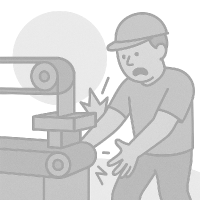
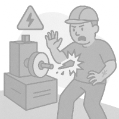
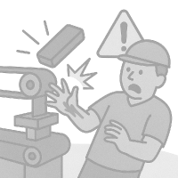
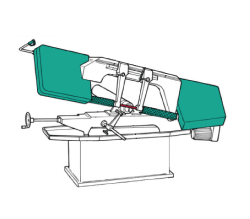
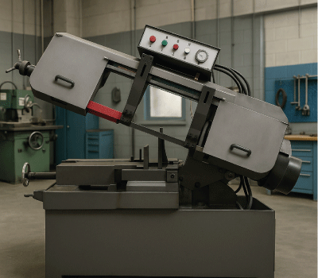

SEGA A NASTRO

Macchina utensile per il taglio a freddo dei metalli tramite un utensile costituito da un nastro metallico dentato (lama). Il pezzo viene mantenuto bloccato sul piano macchina mentre la testa, all’interno della quale scorre il nastro dentato, viene abbassata manualmente o automaticamente, per effettuare il taglio. La lavorazione avviene con abbondante uso di fluido lubrorefrigerante.
RISCHI
I tre rischi principali e il loro livello di rischio
-
ALTO
-
MEDIO
-
BASSO
-

contatti accidentali con il nastro
-

Proiezione di materiale (lesioni al corpo)
-

rottura del nastro o proiezione del pezzo nell’ambiente circostante per errato bloccaggio del pezzo
DISPOSITIVI DI PROTEZIONE
Clicca per visuallizare nel dettaglio

